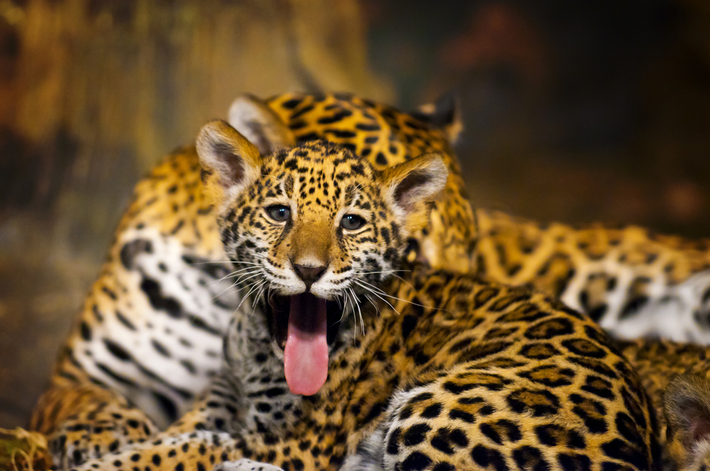

Across its many ecosystems, the wildlife of Sri Lanka, an island nation in South Asia, is a fascinating tapestry. The country's tremendous biodiversity is evidence of its dedication to protecting the natural heritage, ranging from magnificent elephants to elusive leopards, lively wildlife to underwater treasures. The intriguing fauna of Sri Lanka is examined in this essay, together with the conservation initiatives put in place to guarantee their survival. Sri Lanka's lush rainforests are home to a plethora of plant species, many of which are native to the region. The Sinharaja Forest Reserve, a UNESCO World Heritage Site, exemplifies the country's dedication to protecting its unique flora and fauna. Conservation efforts strive to protect these essential ecosystems from challenges such as habitat loss and unsustainable practices.
~~~~~~~~~~~~~~~~~~~~~~~~~~~~~~~~
Giants of the Jungle

Apex Predators

Jewel of the Rainforest
- Explore diverse habitats from beaches to mountains.
- Witness unique wildlife interactions and behaviors.
- Support responsible tourism and conservation efforts.
- Plan your safari adventure.
- Pack essential gear for wildlife viewing.
- Respect wildlife and their habitat.